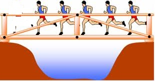

Зад. 1Кое от изброените движения не е трептене?
- а) движението на часовниковата стрелка;
- б) движението на махалото на стенния часовник;
- в) движението на махалото на метронома.
Тест № 22

Максималното отклонение от равновесното положение.

Интересни явления